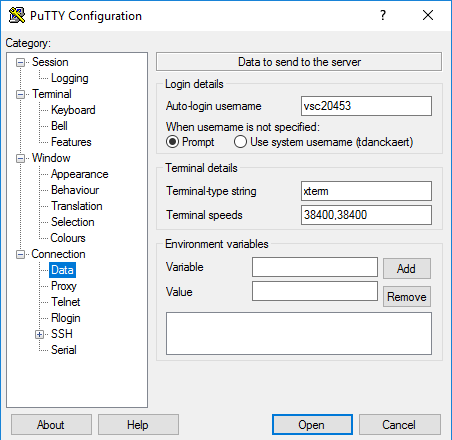

Connecting to the HPC infrastructure#
Before you can really start using the HPC clusters, there are several things you need to do or know:
-
You need to log on to the cluster using an SSH client to one of the login nodes or by using the HPC web portal. This will give you command-line access. A standard web browser like Firefox or Chrome for the web portal will suffice.
-
Before you can do some work, you'll have to transfer the files that you need from your desktop computer to the cluster. At the end of a job, you might want to transfer some files back.
-
Optionally, if you wish to use programs with a graphical user interface, you will need an X-server on your client system and log in to the login nodes with X-forwarding enabled.
-
Often several versions of software packages and libraries are installed, so you need to select the ones you need. To manage different versions efficiently, the VSC clusters use so-called modules, so you will need to select and load the modules that you need.
Connection restrictions#
Since March 20th 2020, restrictions are in place that limit from where you can connect to the VSC HPC infrastructure, in response to security incidents involving several European HPC centres.
VSC login nodes are only directly accessible from within university networks, and from (most) Belgian commercial internet providers.
All other IP domains are blocked by default. If you are connecting from an IP address that is not allowed direct access, you have the following options to get access to VSC login nodes:
-
Use an VPN connection to connect to UGent the network (recommended). See https://helpdesk.ugent.be/vpn/en/ for more information.
-
Whitelist your IP address automatically by accessing https://firewall.vscentrum.be and log in with your UGent account.
-
While this web connection is active new SSH sessions can be started.
-
Active SSH sessions will remain active even when this web page is closed.
-
-
Contact your HPC support team (via hpc@ugent.be) and ask them to whitelist your IP range (e.g., for industry access, automated processes).
Trying to establish an SSH connection from an IP address that does not adhere to these restrictions will result in an immediate failure to connect, with an error message like:
ssh_exchange_identification: read: Connection reset by peer
First Time connection to the HPC infrastructure#
The remaining content in this chapter is primarily focused for people utilizing a terminal with SSH. If you are instead using the web portal, the corresponding chapter might be more helpful: Using the HPC-UGent web portal.
If you have any issues connecting to the HPC after you've followed these steps, see Issues connecting to login node to troubleshoot.
Open a Terminal#
You've generated a public/private key pair with PuTTYgen and have an approved account on the VSC clusters. The next step is to setup the connection to (one of) the HPC.
In the screenshots, we show the setup for user "vsc20167"
to the HPC cluster via the login node "login.hpc.ugent.be".
-
Start the PuTTY executable
putty.exein your directoryC:\Program Files (x86)\PuTTYand the configuration screen will pop up. As you will often use the PuTTY tool, we recommend adding a shortcut on your desktop. -
Within the category <Session>, in the field <Host Name>, enter the name of the login node of the cluster (i.e., "login.hpc.ugent.be") you want to connect to.

-
In the category Connection > Data, in the field Auto-login username, put in <vsc40000> , which is your VSC username that you have received by e-mail after your request was approved. 
-
In the category Connection > SSH > Auth, in the field Private key file for authentication click on Browse and select the private key (i.e., "id_rsa.ppk") that you generated and saved above.

-
In the category Connection > SSH > X11, click the Enable X11 Forwarding checkbox.

-
Now go back to <Session>, and fill in "hpcugent" in the Saved Sessions field and press Save to store the session information.

-
Now pressing Open, will open a terminal window and asks for you passphrase.

-
If this is your first time connecting, you will be asked to verify the authenticity of the login node. Please see section Warning message when first connecting to new host on how to do this.
-
After entering your correct passphrase, you will be connected to the login-node of the HPC.
-
To check you can now "Print the Working Directory" (pwd) and check the name of the computer, where you have logged in (hostname):
$ pwd /user/home/gent/vsc400/vsc40000 $ hostname -f gligar09.gastly.os -
For future PuTTY sessions, just select your saved session (i.e. "hpcugent") from the list, Load it and press Open.
Congratulations, you're on the HPC infrastructure now! To find out where you have landed you can print the current working directory:
$ pwd
/user/home/gent/vsc400/vsc40000
Your new private home directory is "/user/home/gent/vsc400/vsc40000". Here you can create your own subdirectory structure, copy and prepare your applications, compile and test them and submit your jobs on the HPC.
$ cd /apps/gent/tutorials
$ ls
Intro-HPC/
This directory currently contains all training material for the Introduction to the HPC. More relevant training material to work with the HPC can always be added later in this directory.
You can now explore the content of this directory with the "ls --l" (lists long) and the "cd" (change directory) commands:
As we are interested in the use of the HPC, move further to Intro-HPC and explore the contents up to 2 levels deep:
$ cd Intro-HPC
$ tree -L 2
.
'-- examples
|-- Compiling-and-testing-your-software-on-the-HPC
|-- Fine-tuning-Job-Specifications
|-- Multi-core-jobs-Parallel-Computing
|-- Multi-job-submission
|-- Program-examples
|-- Running-batch-jobs
|-- Running-jobs-with-input
|-- Running-jobs-with-input-output-data
|-- example.pbs
'-- example.sh
9 directories, 5 files
This directory contains:
-
This HPC Tutorial (in either a Mac, Linux or Windows version).
-
An examples subdirectory, containing all the examples that you need in this Tutorial, as well as examples that might be useful for your specific applications.
cd examples
Tip
Typing cd ex followed by Tab (the Tab-key) will generate the cd examples
command. Command-line completion (also tab completion) is a common feature of the bash command
line interpreter, in which the program automatically fills in partially
typed commands.
Tip
For more exhaustive tutorials about Linux usage, see Appendix Useful Linux Commands
The first action is to copy the contents of the HPC examples directory to your home directory, so that you have your own personal copy and that you can start using the examples. The "-r" option of the copy command will also copy the contents of the sub-directories "recursively".
cp -r /apps/gent/tutorials/Intro-HPC/examples ~/
Go to your home directory, check your own private examples directory, ... and start working.
cd
ls -l
Upon connecting you will see a login message containing your last login time stamp and a basic overview of the current cluster utilisation.
Last login: Thu Mar 18 13:15:09 2021 from gligarha02.gastly.os
STEVIN HPC-UGent infrastructure status on Mon, 19 Feb 2024 10:00:01
cluster - full - free - part - total - running - queued
nodes nodes free nodes jobs jobs
-------------------------------------------------------------------------
joltik 6 0 1 10 29 18
doduo 22 0 75 128 1397 11933
accelgor 4 3 2 9 18 1
donphan 0 0 16 16 16 13
gallade 2 0 5 16 19 136
For a full view of the current loads and queues see:
https://hpc.ugent.be/clusterstate/
Updates on current system status and planned maintenance can be found on https://www.ugent.be/hpc/en/infrastructure/status
You can exit the connection at anytime by entering:
$ exit
logout
Connection to login.hpc.ugent.be closed.
tip: Setting your Language right
You may encounter a warning message similar to the following one during connecting:
perl: warning: Setting locale failed.
perl: warning: Please check that your locale settings:
LANGUAGE = (unset),
LC_ALL = (unset),
LC_CTYPE = "UTF-8",
LANG = (unset)
are supported and installed on your system.
perl: warning: Falling back to the standard locale ("C").
This means that the correct "locale" has not yet been properly specified on your local machine. Try:
LANG=
LC_COLLATE="C"
LC_CTYPE="UTF-8"
LC_MESSAGES="C"
LC_MONETARY="C"
LC_NUMERIC="C"
LC_TIME="C"
LC_ALL=
A locale is a set of parameters that defines the user's language, country and any special variant preferences that the user wants to see in their user interface. Usually a locale identifier consists of at least a language identifier and a region identifier.
Note
If you try to set a non-supported locale, then it will be automatically
set to the default. Currently the default is en_US.UFT-8 or en_US,
depending on whether your originally (non-supported) locale was UTF-8 or not.
Transfer Files to/from the HPC#
Before you can do some work, you'll have to transfer the files you need from your desktop or department to the cluster. At the end of a job, you might want to transfer some files back.
WinSCP#
To transfer files to and from the cluster, we recommend the use of WinSCP, a graphical file management tool which can transfer files using secure protocols such as SFTP and SCP. WinSCP is freely available from http://www.winscp.net.
To transfer your files using WinSCP,
-
Open the program
-
The Login menu is shown automatically (if it is closed, click New Session to open it again). Fill in the necessary fields under Session
-
Click New Site.
-
Enter "login.hpc.ugent.be" in the Host name field.
-
Enter your "vsc-account" in the User name field.
-
Select SCP as the file protocol.
-
Note that the password field remains empty.

-
Click Advanced....
-
Click SSH > Authentication.
-
Select your private key in the field Private key file.
-
-
Press the Save button, to save the session under Session > Sites for future access.
-
Finally, when clicking on Login, you will be asked for your key passphrase.

The first time you make a connection to the login node, a Security Alert will appear and you will be asked to verify the authenticity of the login node.
Make sure the fingerprint in the alert matches one of the following:
- ssh-rsa 2048 10:2f:31:21:04:75:cb:ed:67:e0:d5:0c:a1:5a:f4:78
- ssh-rsa 2048 SHA256:W8Wz0/FkkCR2ulN7+w8tNI9M0viRgFr2YlHrhKD2Dd0
- ssh-ed25519 255 19:28:76:94:52:9d:ff:7d:fb:8b:27:b6:d7:69:42:eb
- ssh-ed25519 256 SHA256:8AJg3lPN27y6i+um7rFx3xoy42U8ZgqNe4LsEycHILA
- ssh-ecdsa 256 e6:d2:9c:d8:e7:59:45:03:4a:1f:dc:96:62:29:9c:5f
- ssh-ecdsa 256 SHA256:C8TVx0w8UjGgCQfCmEUaOPxJGNMqv2PXLyBNODe5eOQ
If it does, press Yes, if it doesn't, please contact hpc@ugent.be.
Note: it is possible that the ssh-ed25519 fingerprint starts with ssh-ed25519 255
rather than ssh-ed25519 256 (or vice versa), depending on the PuTTY version you are using.
It is safe to ignore this 255 versus 256 difference, but the part after should be
identical.


Now, try out whether you can transfer an arbitrary file from your local machine to the HPC and back.
Fast file transfer for large datasets#
See the section on rsync in chapter 5 of the Linux intro manual.
Changing login nodes#
It can be useful to have control over which login node you are on. However, when you connect to the HPC (High-Performance Computing) system, you are directed to a random login node, which might not be the one where you already have an active session. To address this, there is a way to manually switch your active login node.
For instance, if you want to switch to the login node named gligar09.gastly.os, you can use the following command while you are connected to the gligar10.gastly.os login node on the HPC:
ssh gligar09.gastly.os
If you want to find out which login host you are connected to, you can use the hostname command.
$ hostname
gligar09.gastly.os
$ ssh gligar10.gastly.os
$ hostname
gligar10.gastly.os
Rather than always starting a new session on the HPC, you can also use a terminal multiplexer like screen or tmux.
These can make sessions that 'survives' across disconnects.
You can find more information on how to use these tools here (or on other online sources):